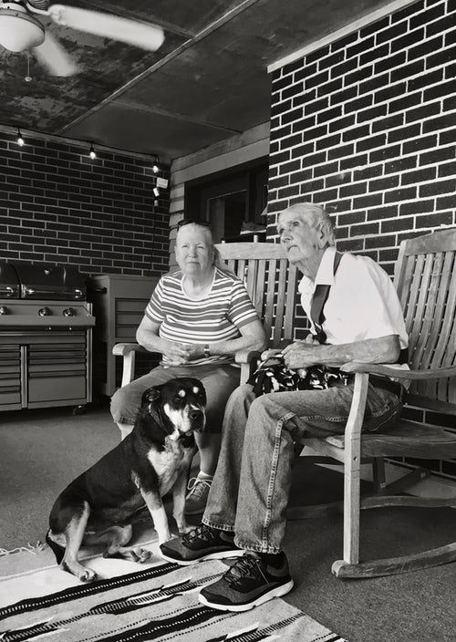

Friend,
Family,
Future,
They are not just a pet
Durham House of Pets
Our History
Durham House of Pets Animal Supplies, Inc., or simply Durham House of Pets, is an American pet retailer in the United States, with corporate offices in Concord and Manchester NH. Durham House of Pets sells pet products and services, as well as certain types of live animals.The company was founded in 1965 as a mail-order business selling veterinary supplies.
Our Strength
"The goal here is superior health and well-being for the pets that bring so much love and joy to our lives."
